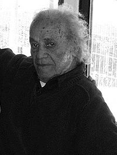

El poeta chileno creó un lenguaje literario capaz de sobrevivir en la calle


Me imagino a Parra, preguntando:
—¿Comprendido?
Y alguien le responde:
—Más o menos nomás…
Aparte de ser una paráfrasis de Verlaine, ese guatapique oculta una trampa. Si escribir tal como se habla es literatura, entonces no escribir como se habla dejaría de serlo, para convertirse en antiliteratura o antipoesía. Conclusión reforzada por este título tramposo: arte poética, en lugar de arte antipoética.
Típicos de Parra esos trabalenguas, esos trabapensamientos. Pellizcones mentales que nos propina el viejo profesor de mecánica racional, advirtiéndonos que entender la antipoesía no es tan sencillo.
Porque no es tan fácil escribir como se habla. Ni tan nuevo. A fines del siglo antepasado, el profesor de gimnasia y retórica, Juan de Mairena —heterónimo de Antonio Machado—, pedía a sus alumnos que tradujeran a lenguaje poético esta frase: “Los eventos consuetudinarios que acontecen en la rúa”. Uno de sus discípulos salía al pizarrón y escribía: “Lo que pasa en la calle”. El maestro Mairena comentaba: “No está mal”.
Si no es nada nuevo usar un lenguaje corriente; entonces podría pasar que la antipoesía sea todo lo contrario. Podría ser ciento por ciento artificial, inventada y, por ende, letterario. Podría tratarse de artefactos poéticos que “parecen” venir de la calle, porque están bien inventados. Pero son puro artificio. Así como nadie va por ahí declamando versitos, tampoco nadie se pasea hablando en antiversitos. A menos que sea un Cristo de Elqui, o un “embutido de ángel y bestia”. Entonces, lo antipoético sería una sofisticada pretensión de naturalidad. Mientras que lo poético sería lo verdaderamente natural. ¿Lo habremos entendido ahora?
—Más o menos nomás… imagino que responde Nicanor Parra.
La antipoesía le permitió a Parra escapar de la sombra glotona de Neruda.
¡Pucha! No hay cómo diablos comprender a Parra, fácilmente. Mejor dar un rodeo, convertir esto en un antiartículo. Veamos si lo entendemos explorando la “estrategia Beckett”.
El joven Samuel Beckett dejó su verde Irlanda para ser escritor en París. Pero sólo consiguió convertirse en secretario de un escritor: James Joyce. Peor que eso: escribía ensayos laudatorios del maestro; investigaba para su novela inacabable (e insoportable) Finnegans Wake; y hasta le leía en voz alta a Joyce que estaba casi ciego. No contento con tanta servidumbre, el maestro pretendió casar a Beckett con su hija esquizofrénica. El joven salió huyendo. Pero ni siquiera eso lo liberó: “Mis poemas hieden a Joyce”, escribió desesperado.
Hasta que tuvo una visión. Ocurrió a mediados de los cuarenta, al final del muelle Este, en el puerto de Dunleary, muy cerca de Dublín. Había tormenta, el oleaje reventaba con fuerza. Y de golpe Beckett descubrió su estrategia. Todo lo que en Joyce era abundancia él debería convertirlo en pobreza. En lugar de agregar debería quitar. Para empobrecer su lenguaje, Beckett incluso dejó el inglés y se pasó al francés, porque en éste le sería más fácil “escribir sin estilo”. De esa voluntaria miseria nació el Beckett de Esperando a Godot.
Ahora imaginemos a un joven poeta chileno, estudiante de cosmología en Oxford casi por esos mismos años. Inventemos que comprende el universo de la física, pero que no consigue hallar su huequito en el mundo de la poesía. Es Parra, agarrándose la cabeza a dos manos y lamentándose: “Ayayay, ¿qué voy a hacer? ¿Cómo escribir poesía, cómo cantar después de que Pablo lo cantara todo? ¿Dónde voy a levantar mi domicilio poético, si ya Neruda fijó su residencia en (toda) la tierra?”.
Y entonces, de golpe —oh, maravilla—, Parra tiene una visión análoga a la de Beckett. Habrá que hacer todo lo contrario. Donde Neruda (y otros como él) sumaban habrá que restar. Contra la elocuencia, la parquedad; contra la seguridad, la relatividad; contra la solemnidad, el humor; contra la carne, el esqueleto; contra el océano, una tina; contra la profecía, un chiste. Menos es más. Y aún menos es mucho más.
Los expertos dirán que si Parra descubrió esa supuesta estrategia no fue sólo para liberarse de Neruda y que ocurrió poco a poco. Sin duda. Del mismo modo que Beckett cayó en la cuenta lentamente y, según algunos, la revelación final la tuvo en el dormitorio de su mamá y no en el romántico muelle tormentoso donde hoy podemos ver una placa que lo conmemora. ¿Pero qué importa cómo fue en realidad? Lo importante de una estrategia es que funcione.
La antipoesía no sólo le permitió a Parra escapar de la sombra glotona de Neruda. Tan importante como eso fue inventar el artificio de un habla precaria e inestable —como el lenguaje coloquial—, que sin embargo logra la permanencia y la estabilidad de la literatura. Dicho de otro modo: Parra creó un lenguaje literario capaz de sobrevivir en la calle. Lo hizo mediante la austeridad y la reducción al mínimo de sus necesidades. (¿Secreto también de su longevidad vital y literaria?). Medio siglo de ayunos adelgazaron sus primeros poemas líricos, hasta convertirlos en los flacos monicacos y chistes de ahora.
—¿Ahora sí lo entendimos?, me imagino preguntándole a Parra.
Y supongo que responde:
—Más o menos nomás…
Diablo de Parra este hombre.
Carlos Franz es escritor.
Miembro de la Academia Chilena de la Lengua.